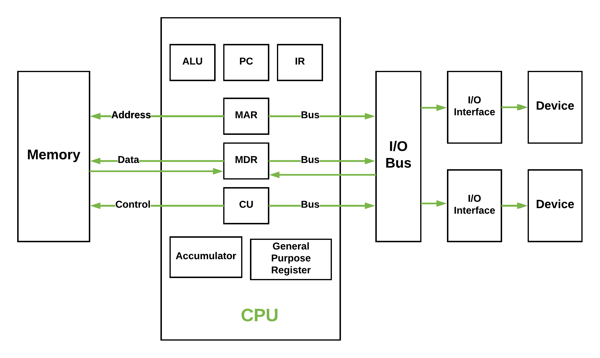

Historically there have been 2 types of Computers:
- Fixed Program Computers – Their function is very specific and they couldn’t be programmed, e.g. Calculators.
- Stored Program Computers – These can be programmed to carry out many different tasks, applications are stored on them, hence the name.
The modern computers are based on a stored-program concept introduced by John Von Neumann. In this stored-program concept, programs and data are stored in a separate storage unit called memories and are treated the same. This novel idea meant that a computer built with this architecture would be much easier to reprogram.
The basic structure is like,

It is also known as IAS computer and is having three basic units:
- The Central Processing Unit (CPU)
- The Main Memory Unit
- The Input/Output Device
Let’s consider them in details.
- Control Unit –
A control unit (CU) handles all processor control signals. It directs all input and output flow, fetches code for instructions and controlling how data moves around the system.
- Arithmetic and Logic Unit (ALU) –
The arithmetic logic unit is that part of the CPU that handles all the calculations the CPU may need, e.g. Addition, Subtraction, Comparisons. It performs Logical Operations, Bit Shifting Operations, and Arithmetic Operation.

Figure – Basic CPU structure, illustrating ALU - Main Memory Unit (Registers) –
- Accumulator: Stores the results of calculations made by ALU.
- Program Counter (PC): Keeps track of the memory location of the next instructions to be dealt with. The PC then passes this next address to Memory Address Register (MAR).
- Memory Address Register (MAR): It stores the memory locations of instructions that need to be fetched from memory or stored into memory.
- Memory Data Register (MDR): It stores instructions fetched from memory or any data that is to be transferred to, and stored in, memory.
- Current Instruction Register (CIR): It stores the most recently fetched instructions while it is waiting to be coded and executed.
- Instruction Buffer Register (IBR): The instruction that is not to be executed immediately is placed in the instruction buffer register IBR.
- Input/Output Devices – Program or data is read into main memory from the input device or secondary storage under the control of CPU input instruction. Output devices are used to output the information from a computer. If some results are evaluated by computer and it is stored in the computer, then with the help of output devices, we can present it to the user.
- Buses – Data is transmitted from one part of a computer to another, connecting all major internal components to the CPU and memory, by the means of Buses. Types:
- Data Bus: It carries data among the memory unit, the I/O devices, and the processor.
- Address Bus: It carries the address of data (not the actual data) between memory and processor.
- Control Bus: It carries control commands from the CPU (and status signals from other devices) in order to control and coordinate all the activities within the computer.
Von Neumann bottleneck –
Whatever we do to enhance performance, we cannot get away from the fact that instructions can only be done one at a time and can only be carried out sequentially. Both of these factors hold back the competence of the CPU. This is commonly referred to as the ‘Von Neumann bottleneck’. We can provide a Von Neumann processor with more cache, more RAM, or faster components but if original gains are to be made in CPU performance then an influential inspection needs to take place of CPU configuration.
This architecture is very important and is used in our PCs and even in Super Computers.